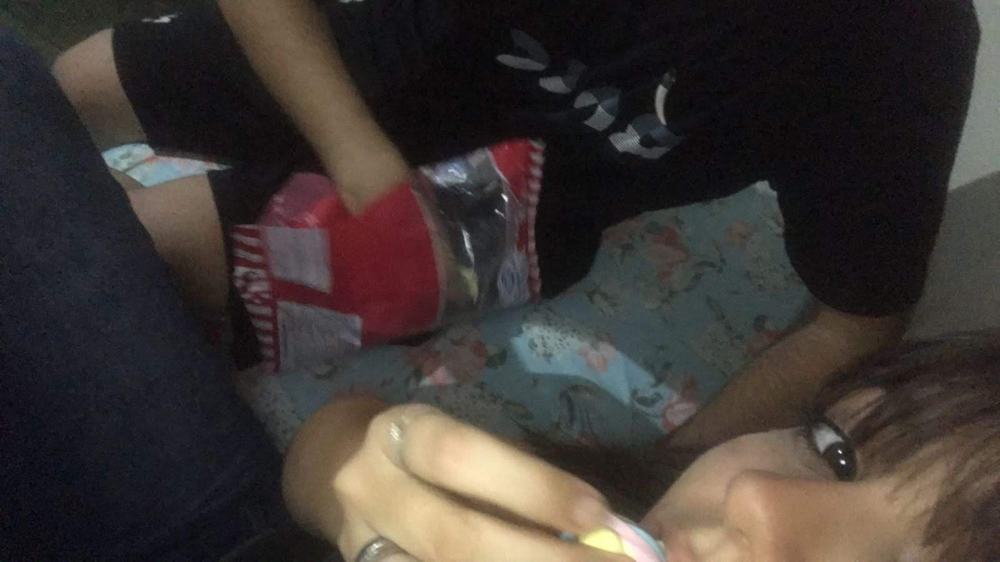
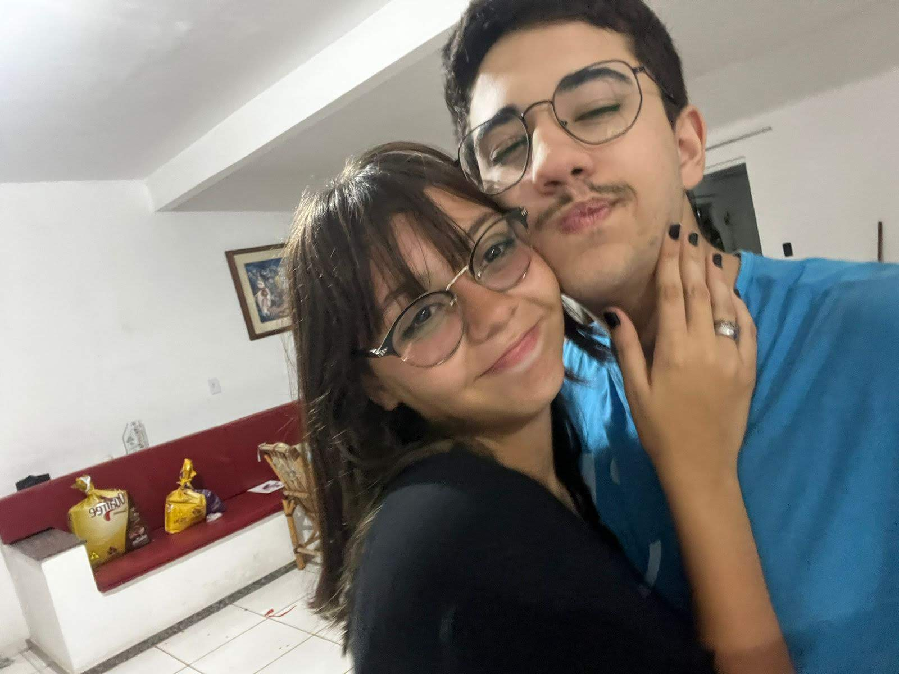
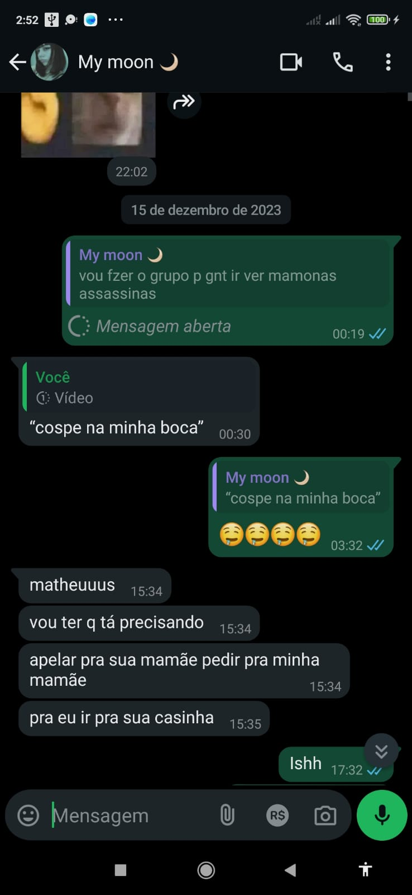

Bem-vinda
Você está pronta?
Antes de começar, confirme:
Você conhece esta pessoa?
Tem certeza?
Olhe bem pra isso:
Espere...

É a Luisa que está acessando essa página agora?
Sim, Luisa sem z
Para que tudo dê certo, você precisa estar ouvindo a música de fundo.
Quando estiver ouvindo-a, clique no botão.
Bom, então vamos lá...
eu queria que você soubesse de algumas coisas.
Por isso fiz esse presente para você.
As vezes é difícil imaginar...
que alguém pode aparecer do nada...
e transformar completamente...
a nossa perspectiva de vida.
Assim como você fez com a minha.
E eu quero te mostrar isso.
Simplicidade
Em tantos anos eu nunca valorizei tanto momentos como este...
E quando digo valorizar, é a vontade de ter mais momentos como esse. De passarmos horas e horas conversando enquanto tinhamos algo para comer e te conhecer mais e conversar e me envolver nos seus assuntos.
Conversas que demoravam horas e horas e quando acabava pareciam minutos. Horras essas que eu ficava contando que chegassem no dia seguinte, para que todos aqueles seus sorrisos eu pudesse ver novamente.
Momentos momentos esse que não importava quanto eu estivesse cansado, do serviço ou do curso. Eu sempre dava o meu melhor pela minha pequena e linda garota, fazia questão de poder arrancar aquela risada que todos diziam ser dificil de escutar mas eu... ahh eu sempre escutava, a tão desejada rissada de fusca kkkkkkkk
Momentos..., momentos esses que eu nunca vou me cansar de ter. Não importava como eu estivesse eu sempre saia o melhor dali. Por ter visto você, escutado sua voz e pedindo a Deus para escutar dos seus lindos labios que você me amava. Ou de você me falando sobre seu dia e eu pedindo mais e mais, para ver você falando comigo. E essa vontade está muito longe de acabar pois ainda há milhões de palavras que ainda quero muito ouvir você falar.
As fotos...

Essa é minha foto favorita sua.
Eu me apaixonei por você mais de uma vez.
Lembra das diversas vezes que eu fiz cara de bobo e você me perguntou "O que foi? Por que está me olhando desse jeito?" ou " Por que você esta assim? " e eu respondi "Nada uai..."?
Cada uma dessas caras foi quando me descobri apaixonado por você, e vou te contar quais foram:
- A primeira vez Foi na Santa Rita, você nem me conhecia direito. Só que você ja fazia parte dos meus sonhos e nem sabia. Eu te vi pela primeira vez, você estava com um vestido preto e aquele mini corset e eu te olhava e imagina eu me ajoelhando e te pedindo em casamento por ser essa mini goticazinha e aqueles seus lindos e brilantes, e aquele som da trombeta do apocalipse que ecoou nos meu ouvidos, "A RISSADA DE FUSCA KKKKKKKKKKK". Eu te olhava cada segundo e ficava te admirando, "como alguem no interior de Cataguases pode ser tão linda desse jeito meu Deus do céu" eu pensava. E via alexandre fazendo as piadas com você e me deva uma raiva kkkkkk você não tem noção. " Como pode alguem fazer piada com uma princesa dessa?? ". Esse foi o primeiro momento que me apaixonei pro você.
- Já a segunda..., me lembro perfeitamente: Tinhamos nos encontrado e começamos a andar. Eu, você, Matheus e Mijão. Fomos para a pista logo depois de eu ter tantado ensinar a Helena a andar de skate e ela responder grosseiramente " eu sei andar " e quase cair kkkkkkkkk . Fomos até a pista de skate e quando estavamos voltando pareciamos dois pombinhos conversando sobre historia, completamente entusiasmados. E eu não entendia nada sobre revolução russa, mas queria te impressionar. E lembro que antes de sairmos da pista eu estava louco pra te beijar, mas não vem ao caso kkkkkk. Depois que saimos de lá e fomos até a praça do Bahamas eu não sei porquê mas eu comecei a te ler e falar tudo sobre você na intenção de tentar te ajudar de alguma forma. E foi ai que eu vi, eu vi seus olhos brilharem pra mim. Deis de então eu não sei mais como é viver sem essa sensação e te garanto não quero ficar sem ela nunca. Ser admirado por quem você ama é incrivel. E foi ai que notei que me apaixonei, ja estando apaixonado. Transformando essa então na segunda vez que me apaixonei pela mesma maravilhosa garota, que é você.
- A terceira vez foi quando saímos e fomos para o seu sitio a primeira vez. Acabou o que fazer e fomos para o seu terraço e estavamos conversando bastante, mas em certo momento, o assunto acabou e ficamos olhando um para o outro ao som das vozes misturadas do seu pai, sua mãe e minha familia. Iluminados apenas pela luz que vinha la de baixo e daquela linda lua que brilhava sobre nós. E eu lembro que queria muito fazer o que vou falar agora mas não fiz: Eu queria pegar você e te dar muito muito beijos, beijar você da cabeça aos pes e logo depois deitar-mos eu e você alí para logo depois eu te pedir em casamento, ali tive a certeza que você era a mulher da minha vida. Mas na verdade o que eu fiz foi só pegar na sua mão, tentar lutar contra o frio na barriga e o medo de fazer e ficar eu e você alí, parados e dando apenas selinhos. Não é atoa que descemos dali com muita coisa acumulada e presenciamos a fraze " o que que é isso Luisa..." e então desse dia em diante eu só queria pensar em momentos como aquele onde pudessemos estar juntos, sem mais ninguém, apenas na companhia um do outro olhando o céu e pensando que não significamos nada no universo, mas de uma forma íntima, significamos muito um para o outro.
- Bom, a quarta vez que era para ser a terceira mas deixei o melhor pro final. foi quando você veio aqui em casa depois de passarmos horas e horas conversando depois da formatura do kenny, falando sobre você querer pegar um certo alguem igual o Sasuke falando do itachi kkkkkkkkk . E no dia seguinte você vindo aqui em casa e nos dois passando pela sensação mais pertubadora do mundo, o frio da barriga e a certeza que ambos queriam se beijar mas o medo de não saber beijar, o medo de estragar algo. E ficamos naquela torturante sesão de detetive apenas com nossos olhares se encontrando e esperando alguma desculpa para sair dali para assim termos o nosso beijo. E quando saimos dali falando que iriamos construir a nossa historia rpg, mal sabia eu que estaria escrevendo minha historia de amor e não a minha historia rpg. Foi alí que aprendi que amar não era apenas palavras bonitas ditas por cantores ou escrita por escritores ou poetas. E sim a melhor sensação do mundo. Você se entrega de corpo e alma e entrega tudo para a outra pessoa. Naquele beijo eu selei a minha aliança com amor, assim como Deus selou sua promessa com nóe através do arco iris. Depois daquele beijo, aquele unico beijo que teve direito a plateia eu nunca mais fui o mesmo. E te garanto minha princesa, nunca mais saberei viver sem o seu amor ou sem seu beijo. Diferente dos ultimos 3 finais, dessa vez não foi só uma paixão e sim foi o amor... essa foi a ultima vez que me apaixonei por você porquê deis de então eu estou te amando.
E esse é só o começo.
O nosso começo.
3. O que você mudou em mim

Essa foto foi tirada na virada do dia 19, pro dia 20 de janeiro.
O que isso tem a ver, você se perguntaria?
Antes de começarmos a estar juntos, eu estava há anos sem comemorar meu aniversario com meus amigos e sem proposito de vida algum, em todo meu aniversario eu gosto de notar coisas boas e ruins que aconteceram comigo e agradecer elas a Deus. E nesse dia foi o nascer do sol mais bonito que eu ja tinha visto, além do mais lindo foi o melhor aniversario que eu poderia ter ja que agora tudo estava dando certo e eu em fim estava amando.
E essa felicida esta completamente ligada ao amor que eu sinto por você e a todos os outros fenomenos que eu citei antes que você causou em mim.
Para mim, tudo muda não porquê queremos e sim porquê precisamos e você me fez notar e viver isso.
O que eu iria fazer antes? Não tinha nenhum proposito de vida, só queria curtir o dinheiro que ganhava.
Pelo menos não tinha antes de você antes de você.
Você abriu meus olhos e me ensinou o que é amar. E o que é de verdade algo importante, você me fez uma verdadeira metamorfose ambulante que estava atrás de agradar sua amada e futura esposa que sinceramente é assim que quero viver o resto da minha vida, ao lado dessa linda e doce mulher que é você Luisa.
Por Você Quero alcançar o inalcançável apenas para ver você feliz, sendo assim não vou desistir do meu sonho do rio pomba valley, da minha empresa ou da nossa linda vida que temos que construir daqui pra frente.
As vezes me pego pensando no que teria acontecido se eu não tivesse você.
Estaria vivendo uma vida pacata, ficando o dia todo em casa sem inspiração nenhuma para querer voltar a manter uma rotina saudável, e procurando pessoas vazias para continuar tendo uma vida vazia com outras pessoas vazias.
Você me faz bem.
Essa foi nossa primeira conversa no WhatsApp
Dia 14 de Dezembro de 2023 você me adicionou e no dia 15 começamos a conversar.
Presente inusitado
Como você sabe, eu amo te dar presentes inusitados e eu não pensei em nada melhor para comemorar 1 ano juntos além desse...
E só de pensar...
onde tudo começou...
E só de pensar...
em tudo que ainda podemos viver juntos...
É de arrepiar.
Você é a minha piturucha ❤️
Bom...
acho que já não dá mais para adiar.
Eu preciso te fazer a pergunta.
Algo que estou muito seguro em perguntar...
Você está pronta?
Quando estiver, é só apertar o botão.
Então...
agora, olhe nos meus olhos...
Qual foi a resposta?
Nesse caso, precisamos atualizar o memorial
| Dom | Seg | Ter | Qua | Qui | Sex | Sáb |
| 1 | 2 | 3 | 4 | 5 | ||
| 6 | 7 | 8 | 9 | 10 | 11 | 12 |
| 13 | 14 | 15 | 16 | 17 | 18 | 19 |
| 20 | 21 | 22 | 23 | 24 | 25 | 26 |
| 27 | 28 | 29 | 30 |
Obrigado por estar comigo.